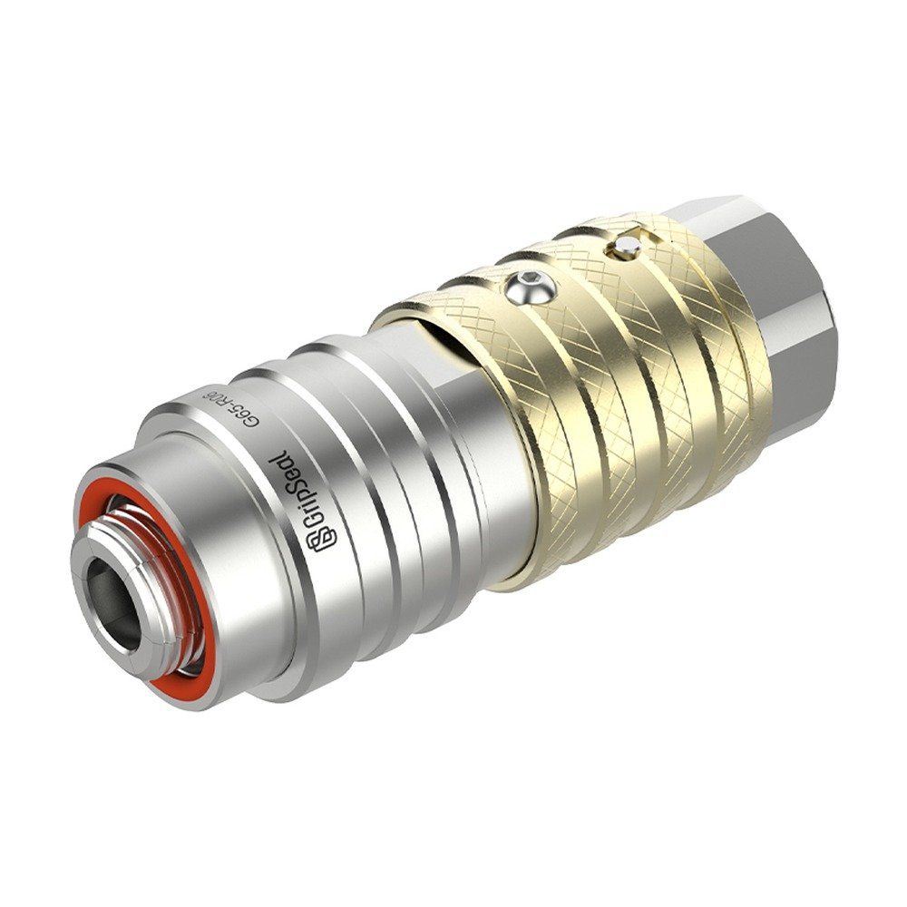
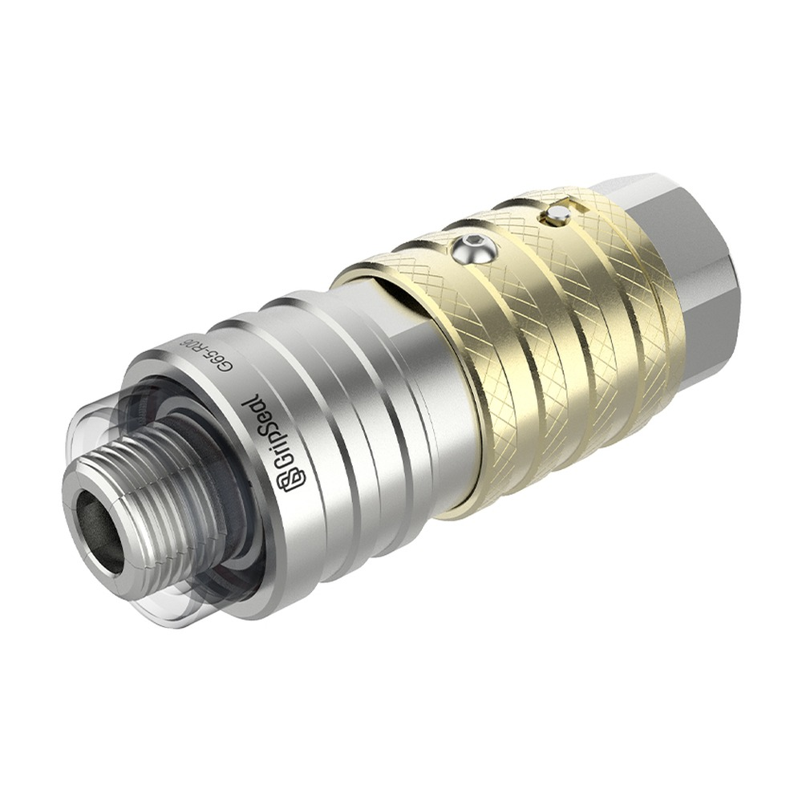
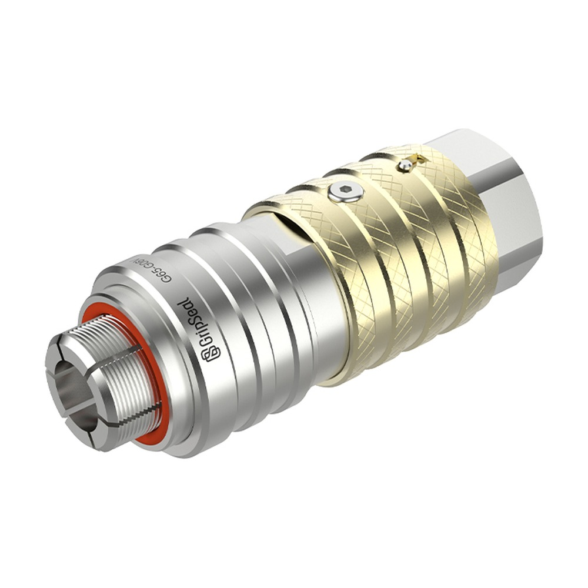
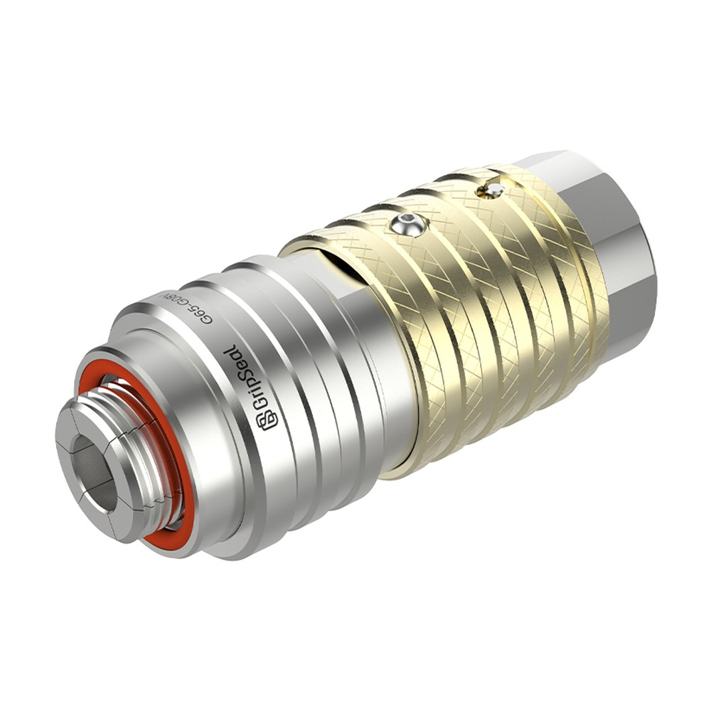

推荐 产品
相关系列对比
在确定最终型号前，可先对比相邻的螺纹接头系列。
内螺纹直通式快速密封接头，真空至 400 bar，带防松脱卡扣与内置截止阀（G65S），用于压力变送器、高压测试与液压连接。



G65 为直通式，G65S 内置截止阀防溢出；316 不锈钢主体，最高 400 bar，适合压力、流量与检漏测试的重复连接。
适用于压力变送器、高压测试、液压连接等内螺纹端口的重复密封测试。
| 最高工作压力 | 真空 – 400 bar |
|---|---|
| 密封结构 | 内螺纹端口 · 端面密封（Face seal）；G65S 内置截止阀防溢出 |
| 螺纹范围 | BSPP 1/4"–1" / BSPT 1/4"–1" / 公制 M14–M33 |
| 介质接口 | BSPP 1/4"–1"（见选型表） |
| 操作方式 | 推入式：对准螺纹后推入后部形成密封 |
| 主体材质 | 316 不锈钢 |
| 密封材质 | 主密封 Neoprene / NBR；内密封 NBR |
| 温度范围 | -20 °C – +120 °C |

连接器锁紧后，旋转外壳可进一步锁定，防止振动或反复测试造成松动。
G65S 内置截止阀：未接入螺纹端口时阀门保持关闭，防止测试介质溢出。
采用高性能 316 不锈钢，耐高压、抗锈蚀，适用于压力传感器与液压阀等高压测试。
直通流道大幅降低测试压力与流量损失（不带截止阀的 G65 版本）。
| 型号族 | 螺纹类型 | 螺纹范围 | 介质接口 | 压力 | 密封材质 |
|---|---|---|---|---|---|
| G65 / G65S（BSPP） | 平行管螺纹 | BSPP 1/4"–1" | BSPP 1/4"–1" | 真空 – 400 bar | Neoprene / NBR |
| G65 / G65S（BSPT） | 锥管螺纹 | BSPT 1/4"–1" | BSPT 1/4"–1" | 真空 – 400 bar | NBR |
| G65 / G65S（公制） | 公制细牙 | M14–M33 | BSPP 1/4"–1" | 真空 – 400 bar | NBR |
G65 系列是精密测试、运行测试与流量测试的连接方案，适用于各类内螺纹端口。
变送器与仪表内螺纹端口的压力测试与检漏连接。
最高 400 bar 的高压测试工位，耐压且抗锈蚀。
液压系统的内螺纹连接与密封测试。
直通大流量设计，适用于精密测试、运行测试与流量测试。
在确定最终型号前，可先对比相邻的螺纹接头系列。